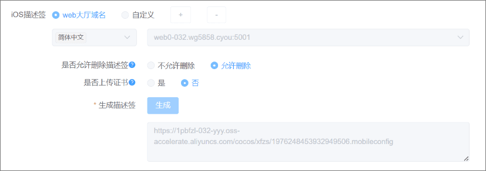
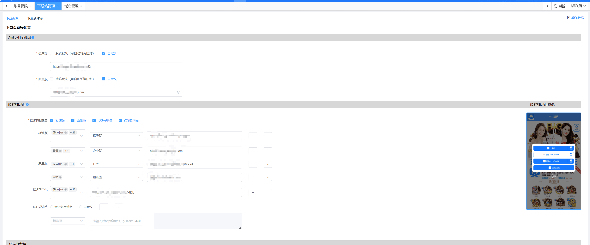
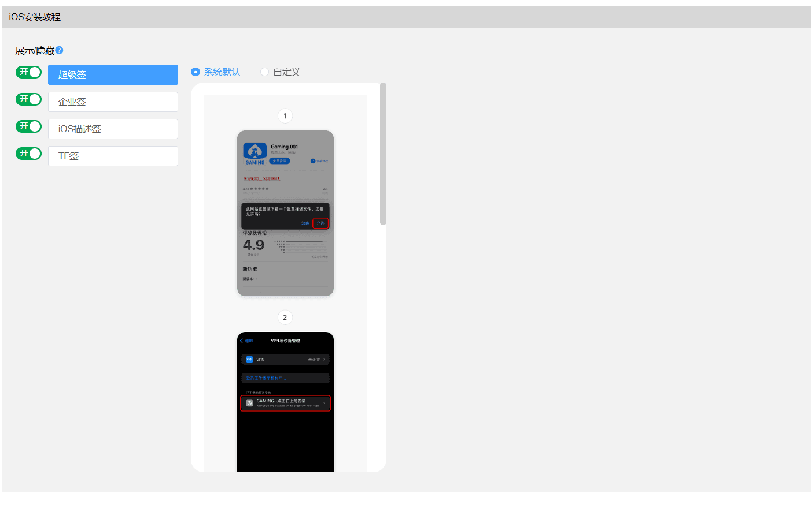
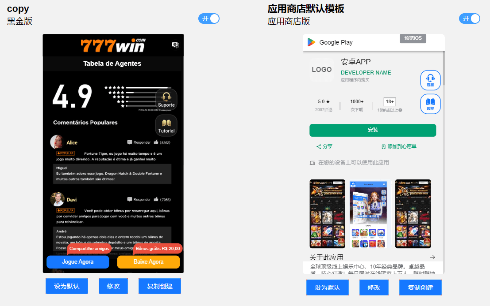
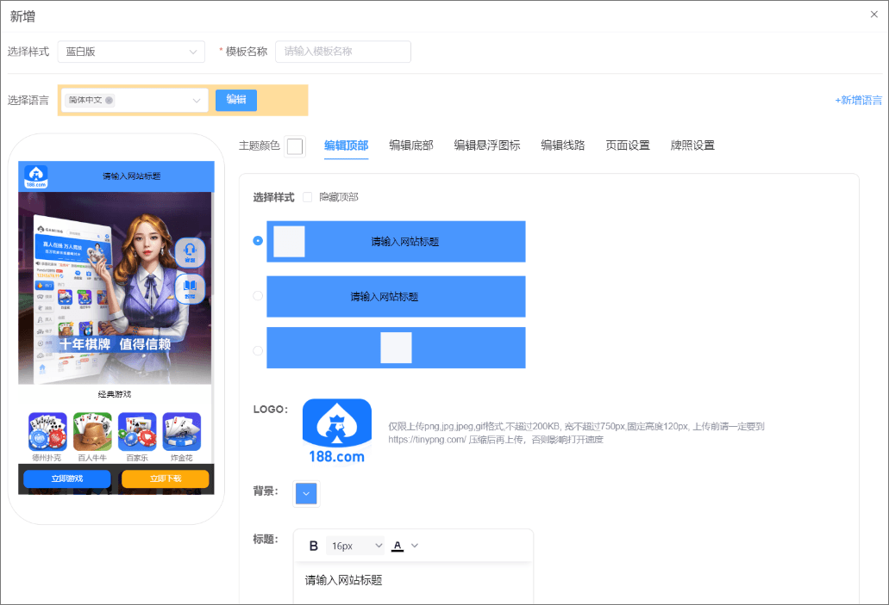
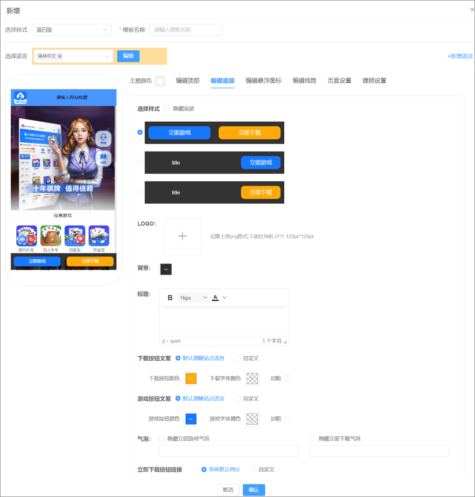
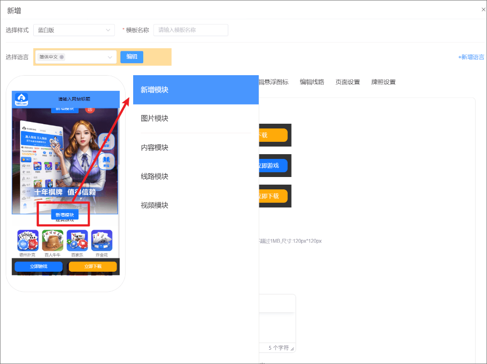
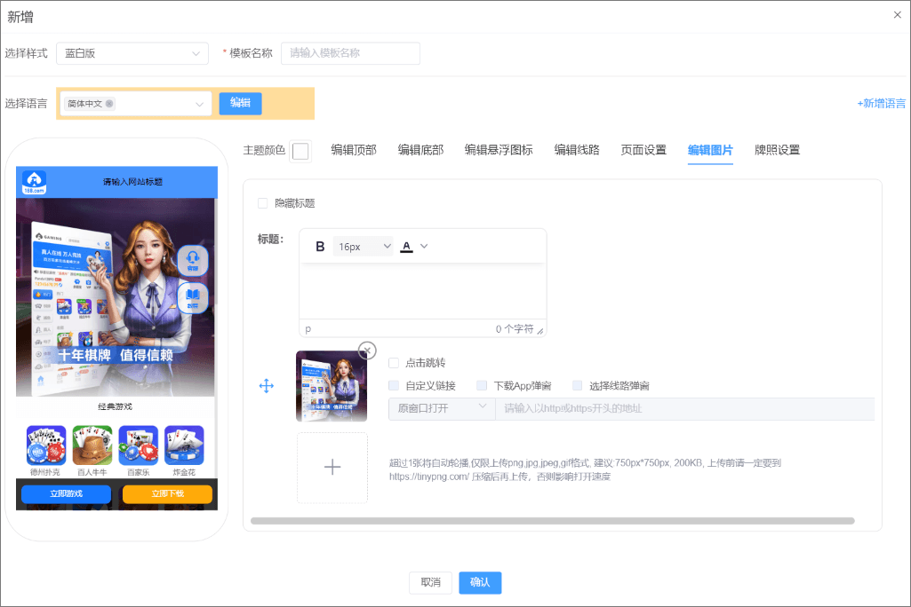
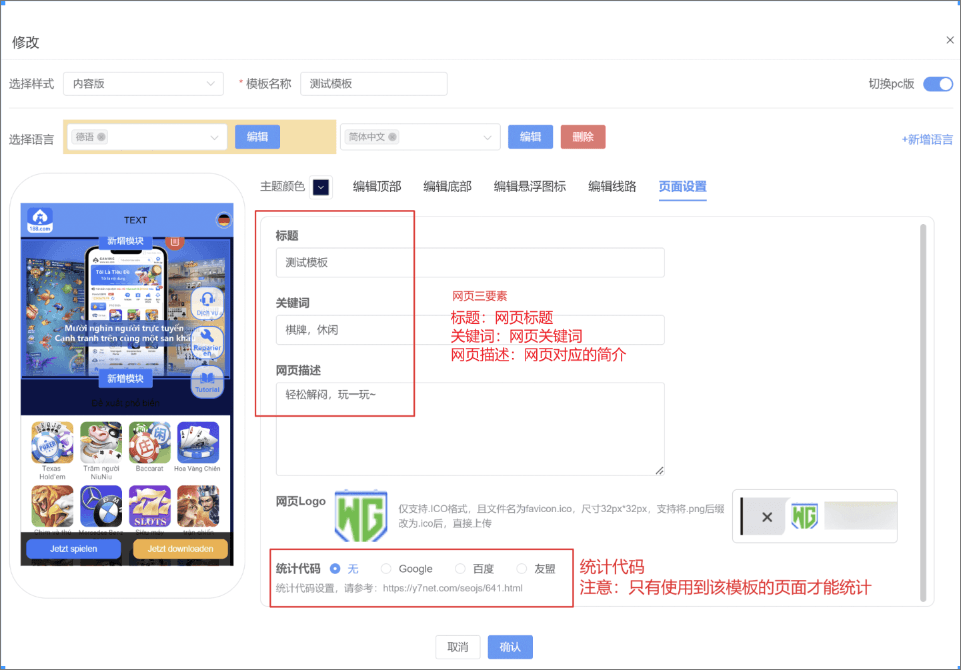

一、下载站管理
（1）下载配置：
Android下载地址
1、Android下载地址选择系统默认和自定义后，在前台下载时会进行轮询（首次点击下载使用系统默认地址，再次点击自定义地址，以此轮询）
iOS下载地址可以配置20个（IOS超级签、TF签、MDM签、企业签，苹果证书，开发者账号等，外部马甲包定制，Google或Facebook竞技开户，下载站定制，美术定制，底层逆向，WhatsApp群发代发等，可加入WG合作方订阅群https://t.me/t_t888888）
1、iOS下载配置：根据勾选判断是否展示在前台，取消勾选后，该下载类型在前台隐藏
2、iOS描述签：根据域名生成的类型。特别注意：APP包配置更改图标后，只有后续描述签才会生效该图标
4、选择语言：根据页面语言获取对应下载地址，若没有配置则无法下载
5、iOS教程选择：在前台下载按钮旁会展示教程入口，点击后展示该安装类型的教程，特别注意：iOS描述签仅展示iOS描述签教程
6、下载地址：填写iOS文件签名后的地址
注意：
iOS描述签（不上传证书会使用默认生成的签名，和P12生成的逻辑一致。可以不上传证书）
web大厅域名：使用web大厅域名生成描述签
是否允许删除描述签：不允许删除：玩家只能通过VPN与设备管理移除描述文件删除书签 允许删除：长按图标显示“删除书签”功能
是否上传证书：不上传将使用系统默认生成的签名，业主也可以上传P12证书，使用自己定义的签名
生成描述签：更换web大厅域名后，需要重新生成描述签


iOS安装教程
1、开关：根据开关判断是否展示在前台展示教程入口
2、自定义：自定义教程

二、下载页模板
（1）功能说明：配置下载页模板，为渠道-下载页链接、推广页打开设置 提供模板选择
（2）操作说明：
1、开关：开启则模板用于推广模板和渠道模板；关闭则不可用
2、默认：默认为下载站域名打开的模板
3、复制创建：复制创建当前模板

（3）操作说明：
1、选择样式：选择不同的模板样式
2、模板名称：自定义当前模板名称
3、选择语言：语言对应的模板，若选择多个语言，则会多个语言对应同一个模板

（4）编辑顶部：
1、顶部：隐藏顶部前台不展示该模块
2、模板名称：提供三种不同样式选择

（5）编辑底部：提供三种不同样式选择，可对底部背景，按钮样式，按钮链接自定义配置

新增/修改内容模块：

新增/修改图片模块：

页面设置：
